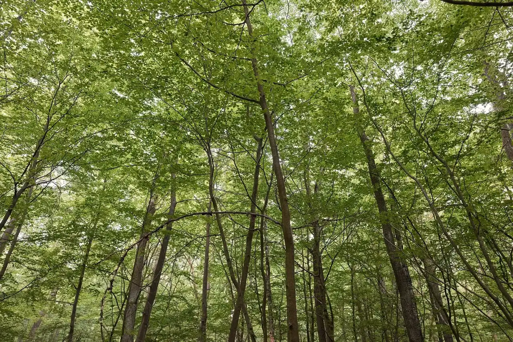
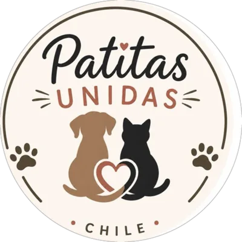
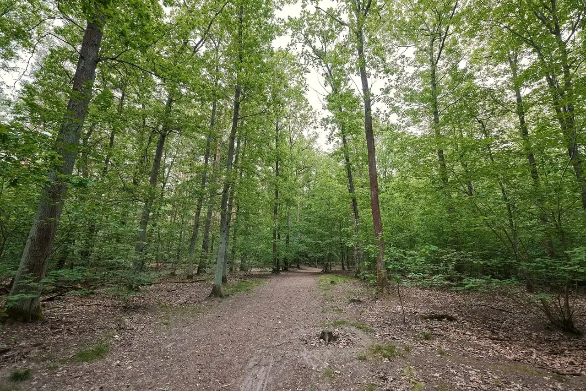
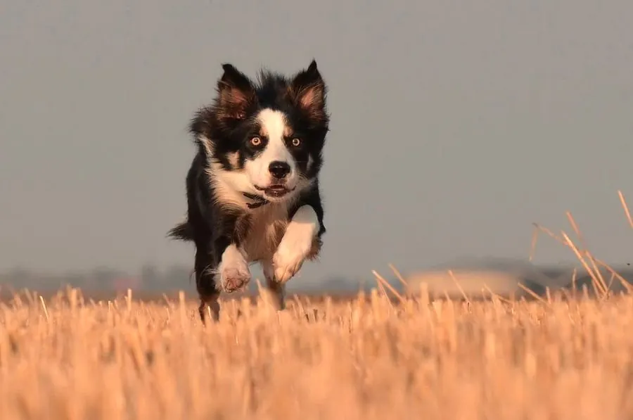
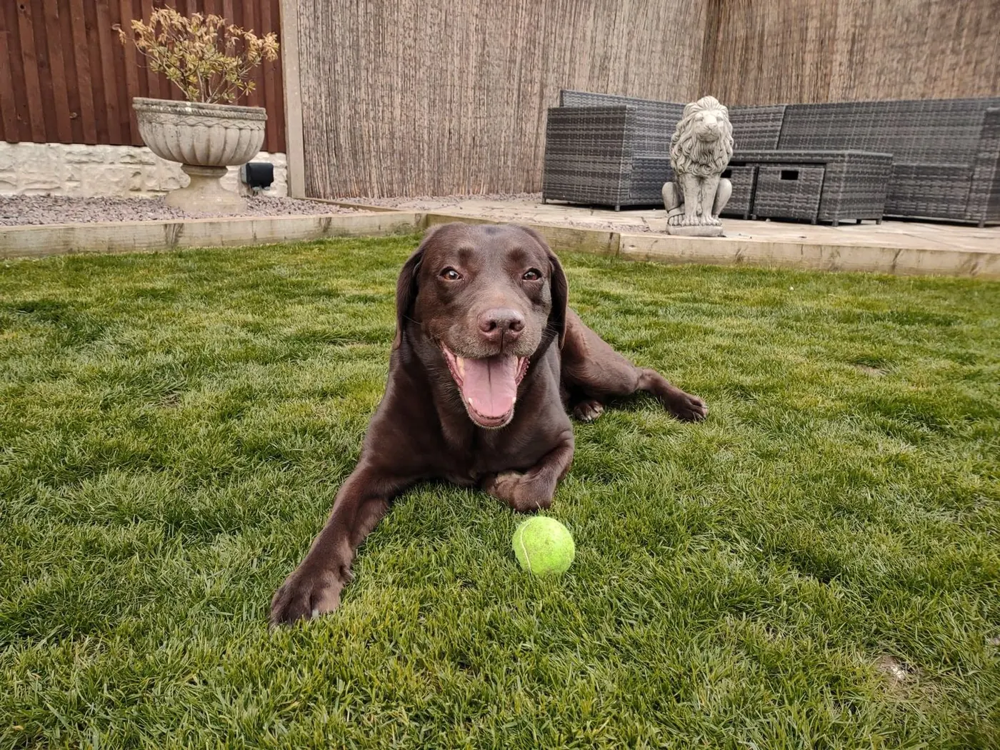
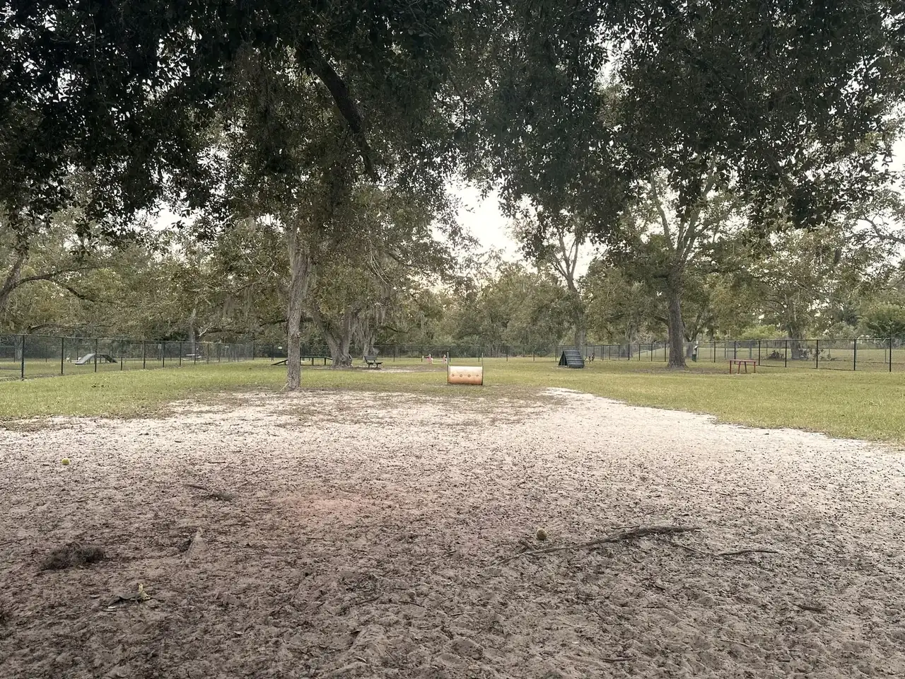

Buscamos familia
Siempre la primera opción: hogar temporal o definitivo.


Patitas UnidasChile



Siempre buscamos familia. Cuando no se puede, les damos un techo y seguimiento. Y esterilizamos, porque es lo único que reduce de verdad la población en calle.
Siempre optamos por conseguirles familia. Cuando no es posible, les construimos un techo, los alimentamos y les damos seguimiento con nuestros voluntarios. Entre todos podemos lograr cosas muy grandes.
Mano de obra, materiales, traslados, donaciones u hogar temporal. Te inscribes en MascotaApp y eliges cómo aportar.
Quiero ayudarNosotros
Nos dedicamos a los animales en situación de calle en Chile. La primera opción es siempre conseguirles un hogar; cuando no es posible, les construimos un techo, los alimentamos y les hacemos seguimiento con nuestros voluntarios.
Y esterilizamos, porque es lo único que reduce de verdad la población en calle.
Hogar definitivo siempre que se pueda, y temporal para los casos más urgentes.
Cuando no hay hogar disponible, construimos refugio para que no duerman a la intemperie.
Alimentación constante y seguimiento del estado de cada animal por parte de voluntarios.
El eje de todo. Es la única forma de disminuir significativamente la población en calle.
Adopta
Cada uno de estos animales fue rescatado por la fundación y hoy busca hogar. Escríbenos desde MascotaApp si te interesa alguno.
Cómo ayudar
Hay muchas formas de aportar, y ninguna es pequeña. Elige la tuya.
Voluntariado
Las inscripciones se hacen desde MascotaApp. Completas un formulario y eliges en qué puedes aportar:
Hay un campo abierto para que cuentes cómo quieres ayudar, aunque no encaje en ninguna de esas casillas.
Donación
Veterinarios
MascotaApp incluye una plataforma para veterinarios que resuelve la gestión de la clínica y la comunicación directa con el tutor, con ficha médica digital.
70 % de descuento en la membresía para quienes colaboran con la fundación
El software es independiente: si prefieres ayudar sin usar la plataforma, también se puede. Y para los tutores la app es gratuita — nos permite resolver casos más rápido y hacer seguimiento.